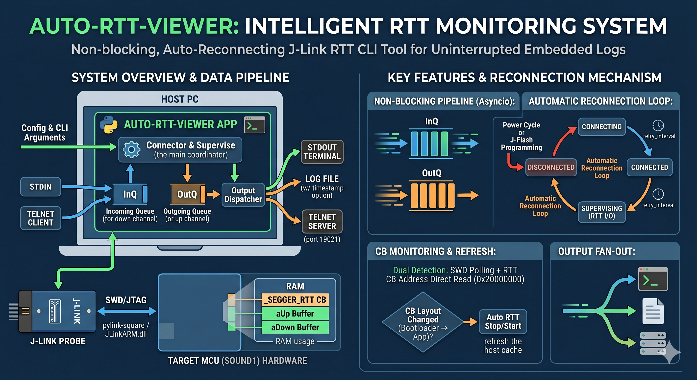

auto-rtt-viewer
J-Link RTT Auto Connect CLI
auto-rtt-viewer
보드 전원 OFF/ON, JFlash 다운로드, J-Link 재점유 상황에서도 RTT 로그 확인 흐름이 끊기지 않도록 만든 Python 기반 CLI 도구. 한 번 실행해두면 연결이 끊겨도 다시 붙고, 로그는 터미널·파일·Telnet으로 동시에 흘러갑니다. Sound1(E8300) 펌웨어 개발의 표준 RTT 모니터링 도구로 정착해 SEGGER RTT Viewer GUI를 완전히 대체합니다.

핵심 가치
자동 재연결
연결 실패·타겟 전원 OFF 상태에서도 100 ms 간격으로 무한 재시도.
같은 사유 반복 시 30초마다 1회만 요약 출력해 로그 도배 방지.
초기 로그 확보
Sound1의 고정 RTT Control Block 주소
0x20000000으로 직접 진입.
부트로더 초기 메시지부터 한 줄도 놓치지 않음.
다중 출력
터미널 stdout · 로그 파일(append) · Telnet 서버(
127.0.0.1:19021)
세 경로에 동시 fan-out. 모든 라인 누락 없이 보존.
양방향 RTT
VSCode 터미널 stdin과 TeraTerm Telnet 클라이언트 입력을
타겟 RTT down channel로 전달. 펌웨어 콘솔 명령 실행 가능.
SN 세션 기억
J-Link 프로브가 여러 개여도 첫 선택 후 SN을 프로세스 메모리에 기억.
재연결 시 선택 창 없이 같은 프로브로 자동 복귀.
CB 변경 자동 감지
부트로더→앱 전환 등으로 RTT Control Block이 재구성되면
100 ms 주기 감시로 감지 → 자동
rtt_start 재호출로 캐시 refresh.
YAML 프로파일
Sound1 기본 프로파일 내장 + 다른 MCU도 YAML 한 장 추가로 재사용.
모든 옵션은 CLI 인자로 오버라이드 가능.
스팸 억제
같은 사유로 연속 실패 시 첫 줄만 출력 → 30초마다 요약 1회.
사유가 바뀌거나 복구되면 즉시 새 상태 출력.
한눈에 빠른 시작
git clone https://github.com/eskim-todoc/auto-rtt-viewer.git
cd auto-rtt-viewer
python -m venv .venv
.\.venv\Scripts\Activate.ps1
pip install -e ".[dev]"
auto-rtt-viewerTip
옵션 없이 auto-rtt-viewer만 치면 Sound1 기본 프로파일이 즉시 동작합니다.
종료는 Ctrl+C 한 번.
문서 지도
| 구간 | 문서 | 읽는 시점 |
|---|---|---|
| 기획 | 개요 | 도구가 무엇을·왜 만드는지 파악할 때 |
| 요구사항 | 목표·기능·수용 기준의 정식 정의가 필요할 때 | |
| 설계 | 아키텍처 | 모듈·FSM·CB 변경 감지의 내부 구조 이해 |
| J-Link RTT 메커니즘 | pylink 함정·끊김 감지 이중화의 근거 확보 | |
| 운영 | 설치 | 처음 PC에 도구를 올릴 때 |
| 사용법 | 매일 쓰는 기본 동작·옵션·TeraTerm 입력 확인 | |
| 디버깅 가이드 | 로그 해석·내부 동작 진단·코드 위치 추적 | |
| 시험 절차 | AC1~AC9 회귀 검증, pytest 실행 | |
| 트러블슈팅 | 문제 증상별 빠른 해결 | |
| 히스토리 | 이력과 변경 | "지난번에 뭐가 바뀌었지?" 추적 |
현재 구현 상태
| 영역 | 기능 | 상태 |
|---|---|---|
| 연결 | pylink JLink.open() + SWD/JTAG + connect(device, speed) | 완료 |
| 연결 | Sound1 기본 프로파일 내장 (device=Cortex-M3, speed=4000 kHz, CB=0x20000000 fixed) | 완료 |
| 연결 | J-Link SN 세션 기억 (프로세스 수명, 디스크 저장 없음) | 완료 |
| 연결 | CLI --serial SN 강제 지정 | 완료 |
| 연결 | CB 검색 모드: fixed / auto / range | 완료 |
| 끊김 감지 | target_connected() 폴링 + memory_read32(CB) 병행 (이중화) | 완료 |
| 끊김 감지 | Reader/Writer 예외 → warn + re-raise → 메인 루프 재연결 | 완료 |
| CB 변경 | 재연결 시 스냅샷 diff 로그 | 완료 |
| CB 변경 | 연결 유지 중 0.1초 주기 감시 → 변경 시 자동 rtt_stop+rtt_start refresh | 완료 (재연결 사이클 경유) |
| 이벤트 | 연속 연결 실패 스팸 억제 (30초마다 요약 1회, 사유 바뀌면 즉시) | 완료 |
| 이벤트 | EventBus prefix + HH:MM:SS.mmm 타임스탬프 | 완료 |
| 출력 | stdout / file(append) / Telnet 동시 fan-out | 완료 |
| 출력 | 라인별 타임스탬프(--timestamp), 부분 라인 버퍼링 | 완료 |
| 입력 | stdin (기본 켜짐) / Telnet 127.0.0.1:19021 → target down channel | 완료 |
| CLI | --profile/--device/--interface/--speed/--serial/--logfile/--no-stdout/--telnet-port/--no-telnet/--no-stdin/--timestamp/--version | 완료 |
| 테스트 | pytest 기준 12+ 통과 (config / connector / pipeline / telnet_iac) | 완료 |